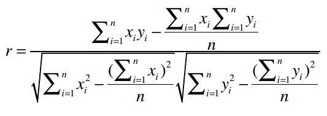
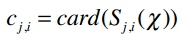
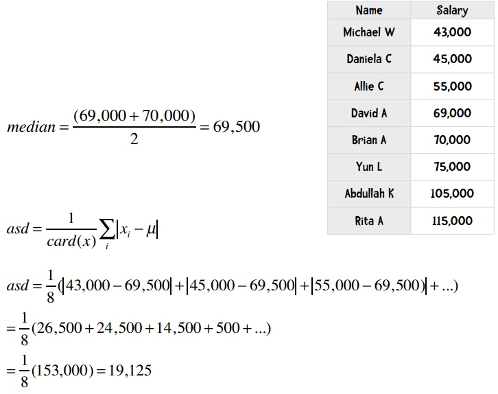
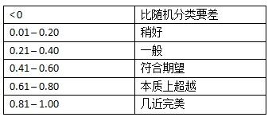
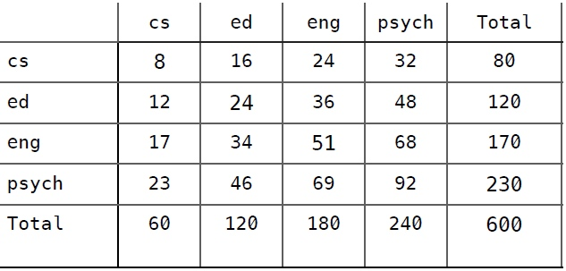
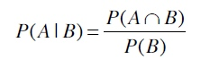

前段时间读了《面向程序员的数据挖掘指南》，原文链接：https://dataminingguide.books.yourtion.com/，把里边的知识点做下整理。
曼哈顿距离
x之差的绝对值加上y之差的绝对值
欧几里得距离
勾股定理
闵可夫斯基距离
- r = 1 该公式即曼哈顿距离
- r = 2 该公式即欧几里得距离
- r = ∞ 极大距离
r值越大，单个维度的差值大小会对整体距离有更大的影响。
协同过滤
利用他人的喜好来进行推荐，也就是说，是大家一起产生的推荐。
皮尔逊相关系数
用于衡量两个变量之间的相关性，它的值在-1至1之间，1表示完全吻合，-1表示完全相悖。
皮尔逊相关系数的计算公式是：
皮尔逊相关系数的近似值：

余弦相似度
“·”号表示数量积。
“||x||”表示向量x的模，计算公式是：
如：
它们的模是：
数量积的计算：
因此余弦相似度是：
余弦相似度的范围从1到-1，1表示完全匹配，-1表示完全相悖。
应该使用哪种相似度？
- 如果数据存在“分数膨胀”问题，就使用皮尔逊相关系数。
- 如果数据比较“密集”，变量之间基本都存在公有值，且这些距离数据是非常重要的，那就使用欧几里得或曼哈顿距离。
- 如果数据是稀疏的，则使用余弦相似度。
K最邻近算法
用户的评价类型可以分为显式评价和隐式评价
- 显式评价指的是用户明确地给出对物品的评价
- 所谓隐式评价，就是我们不让用户明确给出对物品的评价，而是通过观察他们的行为来获得偏好信息。
- 另一种隐式评价是用户的实际购买记录
显式评价的问题
- 问题1：人们很懒，不愿评价物品
- 问题2：人们会撒谎，或存有偏见
- 问题3：人们不会更新他们的评论
基于用户的协同过滤弊端
- 扩展性 上文已经提到，随着用户数量的增加，其计算量也会增加。这种算法在只有几千个用户的情况下能够工作得很好，但达到一百万个用户时就会出现瓶颈。
- 稀疏性 大多数推荐系统中，物品的数量要远大于用户的数量，因此用户仅仅对一小部分物品进行了评价，这就造成了数据的稀疏性。
基于用户的协同过滤和基于物品的协同过滤区别
- 基于用户的协同过滤是通过计算用户之间的距离找出最相似的用户，并将他评价过的物品推荐给目标用户；
而基于物品的协同过滤则是找出最相似的物品，再结合用户的评价来给出推荐结果。
基于用户的协同过滤又称为内存型协同过滤，因为我们需要将所有的评价数据都保存在内存中来进行推荐。
- 基于物品的协同过滤也称为基于模型的协同过滤，因为我们不需要保存所有的评价数据，而是通过构建一个物品相似度模型来做推荐。
修正的余弦相似度
修正的余弦相似度是一种基于模型的协同过滤算法。这种算法的优势之一是扩展性好，对于大数据量而言，运算速度快、占用内存少。
用户的评价标准是不同的，比如喜欢一个歌手时有些人会打4分，有些打5分；不喜欢时有人会打3分，有些则会只给1分。修正的余弦相似度计算时会将用户对物品的评分减去用户所有评分的均值，从而解决这个问题。
U表示同时评价过物品i和j的用户集合
表示将用户u对物品i的评价值减去用户u对所有物品的评价均值，从而得到修正后的评分。
s(i,j)表示物品i和j的相似度，分子表示将同时评价过物品i和j的用户的修正评分相乘并求和，分母则是对所有的物品的修正评分做一些汇总处理。
修正的余弦相似度示例
计算Kacey Musgraves和Imagine Dragons的相似度
我已经标出了同时评价过这两个歌手的用户，代入到公式中：
所以这两个歌手之间的修正余弦相似度为0.5260
使用修正余弦相似度进行预测
比如我想知道David有多喜欢Kacey Musgraves？
p(u,i)表示我们会来预测用户u对物品i的评分，所以p(David, Kacey Musgraves)就表示我们将预测David会给Kacey打多少分。
N是一个物品的集合，有如下特性：
- 用户u对集合中的物品打过分
- 物品i和集合中的物品有相似度数据（即上文中的矩阵）
Si,N表示物品i和N的相似度，Ru,N表示用户u对物品N的评分。
为了让公式的计算效果更佳，对物品的评价分值最好介于-1和1之间。
MaxR表示评分系统中的最高分（这里是5），MinR为最低分（这里是1），Ru,N是用户u对物品N的评分，NRu,N则表示修正后的评分（即范围在-1和1之间）。
若已知NRu,N，求解Ru,N的公式为：
比如一位用户打了2分，那修正后的评分为：
反过来则是：
修正David对各个物品的评分：
结合物品相似度矩阵，代入公式：
将其转换到5星评价体系中：
Slope One算法
一种比较流行的基于物品的协同过滤算法
分为两个步骤：
- 首先需要计算出两两物品之间的差值（可以在夜间批量计算）。
- 第二步则是进行预测
Slope One算法计算差值
计算物品之间差异的公式是：
card(S)表示S中有多少个元素；X表示所有评分值的集合；card(Sj,i(X))则表示同时评价过物品j和i的用户数。
计算Taylor Swift 和 PSY之间的差值
card(Sj,i(X))的值是2——因为有两个用户（Amy和Ben）同时对PSY和Taylor Swift打过分。
分子uj-ui表示用户对j的评分减去对i的评分，代入公式得：
即用户们给Taylor Swift的评分比PSY要平均高出两分。
Slope One算法更新
比如说Taylor Swift和PSY的差值是2，是根据9位用户的评价计算的。当有一个新用户对Taylor Swift打了5分，PSY打了1分时，更新后的差值为：
使用加权的Slope One算法进行预测
公式为：

PWS1(u)j表示我们将预测用户u对物品i的评分。
表示遍历Ben评价过的所有歌手，除了Whitney Houston以外（也就是-{j}的意思）。
整个分子的意思是：对于Ben评价过的所有歌手（Whitney Houston除外），找出Whitney Houston和这些歌手之间的差值，并将差值加上Ben对这个歌手的评分。同时，我们要将这个结果乘以同时评价过两位歌手的用户数。
Ben的评分情况和两两歌手之间的差异值展示如下：
- Ben对Taylor Swift打了5分，也就是ui
- Whitney Houston和Taylor Swift的差异是-1，即devj,i
- devj,i + ui = 4
- 共有两个用户（Amy和Daisy）同时对Taylor Swift和Whitney Houston做了评价，即cj,i = 2
- 那么(devj,i + ui) cj,i = 4 × 2 = 8
- Ben对PSY打了2分
- Whitney Houston和PSY的差异是0.75
- devj,i + ui = 2.75
- 有两个用户同时评价了这两位歌手，因此(devj,i + ui) cj,i = 2.75 × 2 = 5.5
- 分子：8 + 5.5 = 13.5
- 分母：2 + 2 = 4
- 预测评分：13.5 ÷ 4 = 3.375
向量
在线性代数中，向量（vector）指的是具有大小和方向的几何对象。向量支持多重运算，包括相加、相减及数乘等。
- 当我们用这种方式定义特征后，就可以运用线性代数中的向量运算法则了。
在数据挖掘中，向量则可简单认为是物品的一组特征，比如音乐乐曲的特征。做文本挖掘时，会将一篇文章也用向量来表示——每个元素的位置表示一个特定的单词，这个位置上的值表示单词出现的次数。
- 用「向量」一词比用「物品的一组特征」要来的专业
分类器
分类器是指通过物品特征来判断它应该属于哪个组或类别的程序。
分类器程序会基于一组已经做过分类的物品进行学习，从而判断新物品的所属类别。
标准化
要让数据变得可用我们可以对其进行标准化，最常用的方法是将所有数据都转化为0到1之间的值。
标准分计算公式：
mean：平均值
standard deviation：标准差
标准差的计算公式是：
card(x)表示集合x中的元素个数。
修正的标准分
计算方法：将标准分公式中的均值改为中位数，将标准差改为绝对偏差。
中位数指的是将所有数据进行排序，取中间的那个值。如果数据量是偶数，则取中间两个数值的均值。
计算工资的对偏差：
首先将所有人按薪水排序，找到中位数，然后计算绝对偏差：

可以计算得出Yun的修正标准分：
是否需要标准化？
当物品的特征数值尺度不一时，就有必要进行标准化。
需要进行标准化的情形：
- 我们需要通过物品特性来计算距离；
- 不同特性之间的尺度相差很大。
十折交叉验证
将数据集随机分割成十个等份，每次用9份数据做训练集，1份数据做测试集，如此迭代10次。
留一法
在数据挖掘领域，N折交叉验证又称为留一法。
上面已经提到了留一法的优点之一：我们用几乎所有的数据进行训练，然后用一个数据进行测试。
留一法的另一个优点是：确定性。
十折交叉验证是一种不确定的验证。相反，留一法得到的结果总是相同的，这是它的一个优点。
缺点
最大的缺点是计算时间很长。
留一法的另一个缺点是分层问题。
在留一法中，所有的测试集都只包含一个数据。所以说，留一法对小数据集是合适的，但大多数情况下我们会选择十折交叉验证。
混淆矩阵
表格的行表示测试用例实际所属的类别，列则表示分类器的判断结果。
混淆矩阵可以帮助我们快速识别出分类器到底在哪些类别上发生了混淆，因此得名。
这个数据集中有300人，使用十折交叉验证，其混淆矩阵如下：
可以看到，100个体操运动员中有83人分类正确，17人被错误地分到了马拉松一列；92个篮球运动员分类正确，8人被分到了马拉松；85个马拉松运动员分类正确，9人被分到了体操，16人被分到了篮球。
混淆矩阵的对角线（绿色字体）表示分类正确的人数，因此求得的准确率是：
从混淆矩阵中可以看出分类器的主要问题。
在这个示例中，我们的分类器可以很好地区分体操运动员和篮球运动员，而马拉松运动员则比较容易和其他两个类别发生混淆。
Kappa指标
Kappa指标可以用来评价分类器的效果比随机分类要好多少。
Kappa指标可以用来衡量我们之前构造的分类器和随机分类器的差异，公式为：
P(c)表示分类器的准确率，P(r)表示随机分类器的准确率。

动手实践
以下是该分类器的混淆矩阵，尝试计算出它的Kappa指标并予以解释。
准确率 = （50+75+123+170）/600= 0.697
计算列合计和百分比：
然后根据百分比来填充随机分类器的混淆矩阵：

随机分类器准确率 = (8 + 24 + 51 + 92) / 600 = (175 / 600) = 0.292
最后，计算Kappa指标：
这说明分类器的效果还是要好过预期的。
kNN算法
考察这条新记录周围距离最近的k条记录，而不是只看一条，因此这种方法称为k近邻算法（kNN）。
每个近邻都有投票权，程序会将新记录判定为得票数最多的分类。比如说，我们使用三个近邻（k = 3），其中两条记录属于体操，一条记录属于马拉松，那我们会判定x为体操。
KNN 算法预测举例
我们需要预测Ben对Funky Meters的喜好程度，他的三个近邻分别是Sally、Tara、和Jade。
下表是这三个人离Ben的距离，以及他们对Funky Meters的评分：
在计算平均值的时候，我希望距离越近的用户影响越大，因此可以对距离取倒数，从而得到下表：
下面，我们把所有的距离倒数除以距离倒数的和（0.2 + 0.1 + 0.067 = 0.367），从而得到评分的权重：
我们可以注意到两件事情：权重之和是1；原始数据中，Sally的距离是Tara的二分之一，这点在权重中体现出来了。
最后，我们求得平均值，也即预测Ben对Funky Meters的评分：
近邻算法 vs 贝叶斯算法
近邻算法又称为被动学习算法。这种算法只是将训练集的数据保存起来，在收到测试数据时才会进行计算。
贝叶斯算法则是一种主动学习算法。它会根据训练集构建起一个模型，并用这个模型来对新的记录进行分类，因此速度会快很多。
贝叶斯算法的两个优点
能够给出分类结果的置信度
它是一种主动学习算法
概率
我们用符号P(h)来表示，即事件h发生的概率：
- 投掷硬币：P(正面) = 0.5
- 掷骰子：P(1) = 1/6
- 青少年：P(女生) = 0.5
P(h|D)来表示D条件下事件h发生的概率。比如：P(女生|弗兰克学院的学生) = 0.86
计算的公式是：

概率计算
下表是一些人使用笔记本电脑和手机的品牌：
使用iPhone的概率是多少？
如果已知这个人使用的是Mac笔记本，那他使用iPhone的概率是？
首先计算出同时使用Mac和iPhone的概率：
使用Mac的概率则是：
从而计算得到Mac用户中使用iPhone的概率：
为了简单起见，我们可以直接通过计数得到：
贝叶斯法则
贝叶斯法则描述了P(h)、P(h|D)、P(D)、以及P(D|h)这四个概率之间的关系：
现实问题中要计算P(h|D)往往是很困难的
朴素贝叶斯
朴素贝叶斯计算得到的概率其实是真实概率的一种估计，而真实概率是对全量数据做统计得到的。
在朴素贝叶斯中，概率为0的影响是很大的，甚至会不顾其他概率的大小。此外，抽样统计的另一个问题是会低估真实概率。
如何解决概率为0的影响？
解决方法是将公式变为以下形式：
n表示训练集中y类别的记录数；nc表示y类别中值为x的记录数。
m是一个常数，表示等效样本大小。
决定常数m的方法有很多，我们这里使用值的类别来作为m，比如投票有赞成和否决两种类别，所以m就为2。
p则是相应的先验概率，比如说赞成和否决的概率分别是0.5，那p就是0.5。
标准差
标准差是用来衡量数据的离散程度的，如果所有数据都接近于平均值，那标准差也会比较小。
样本标准差的公式是：
我们把有限集合A的元素个数记为card(A)。例如A={a,b,c}，则card(A)=3
高斯分布
正态分布、钟型曲线、高斯分布等术语，他们指的是同一件事：68%的数据会落在标准差为1的范围内，95%的数据会落在标准差为2的范围内：
概率计算公式：
假设我们要计算P(100k|i500)的概率，即购买i500的用户中收入是100,000美元的概率。之前我们计算过购买i500的用户平均收入（106.111）以及样本标准差（21.327），我们用希腊字母μ（读“谬”）来表示平均值，σ（读“西格玛”）来表示标准差。
xi = 100 指的是收入100k
e是自然常数，约等于2.718。
监督式和非监督式学习
当我们使用已经标记好分类的数据集进行训练时，这种类型的机器学习称为“监督式学习”。文本分类就是监督式学习的一种。
如果训练集没有标好分类，那就称为“非监督式学习”，聚类就是一种非监督式学习
聚类
通过物品特征来计算距离，并自动分类到不同的群集或组中。
k-means算法可概括为
- 随机选取k个元素作为中心点；
- 根据距离将各个点分配给中心点；
- 计算新的中心点；
- 重复2、3，直至满足条件。
评判聚类结果的好坏
我们可以使用误差平方和（或称离散程度）来评判聚类结果的好坏，它的计算方法是：计算每个点到中心点的距离平方和。
上面的公式中，第一个求和符号是遍历所有的分类，比如i=1时计算第一个分类，i=2时计算第二个分类，直到计算第k个分类；第二个求和符号是遍历分类中所有的点；Dist指代距离计算公式（如曼哈顿距离、欧几里得距离）；计算数据点x和中心点ci之间的距离，平方后相加。
k-means++
前面我们提到k-means是50年代发明的算法，它的实现并不复杂，但仍是现今最流行的聚类算法。不过它也有一个明显的缺点。在算法一开始需要随机选取k个起始点，正是这个随机会有问题。
有时选取的点能产生最佳结果，而有时会让结果变得很差。k-means++则改进了起始点的选取过程，其余的和k-means一致。
以下是k-means++选取起始点的过程：
- 随机选取一个点；
- 重复以下步骤，直到选完k个点：
- 计算每个数据点（dp）到各个中心点的距离（D），选取最小的值，记为D(dp)；
- 根据D(dp)的概率来随机选取一个点作为中心点。
k-means++选取起始点的方法总结下来就是：第一个点还是随机的，但后续的点就会尽量选择离现有中心点更远的点。